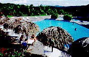

| Home / Dive Resorts / Live-Aboards / Snorkeling / Who We Are / Book a Trip |

Seaside room at the Edgewater
Resort on Rarotonga island.
************************************************************
APPROXIMATE CURRENCY EXCHANGE RATE:
************************************************************
ROUND-TRIP COMMUTER AIR TICKET
, Rarotonga to Aitutaki Atoll =************************************************************
This cheerful clean 3-star hotel, the Edgewater Resort, where all rooms are
air-conditioned, features a freshwater swimming pool, 4 floodlit international
grass tennis courts, 4 squash courts with a resident pro on duty, a safe
& affordable baby-sitting service, regular shuttles into town, motor
bike rentals, game pavilion, & a tour desk that can link you readily
to horseback riding, jungle hikes, spire climbs, golf, traditional Maori
feasts, lawn bowling, duty-free shopping, sailing & day trips to remote
outer islands.
Framed by well-groomed flower gardens, located
on a prime corner of Rarotonga's Western shore, only 5 minutes from the
airport, the 182-room Edgewater Resort has the best lodging bargains on "Raro,"
as the locals call their island. There are 9 deluxe suites in an independent
wing -- all rooms recently renovated, & all featuring A/C, private
terraces or balconies, fridges, radios, TVs & VCRs, in-house movies
& sumptuous decor.
The Edgewater Resort is only five minutes from the Rarotonga
Golf Club. There are two fine little restaurants on the premises. If you
come with kids, to ease your parental tensions the tour desk will plan
special activities for them. There's a rental car office right next door.
And if you bring a business group, there's a 200-person theater-style conference
center on the Edgewater Hotel grounds. The hotel is within an easy stroll of many good
restaurants & bars.
You want scuba diving while you're here on Rarotonga? NAUI
Instructor Greg Wilson has been the lead scuba diving trainer in the Cook
Islands since 1973; & he's trained to certify divers up to the level
of instructor. His dive operation, Cook Island Divers, is located in the
village of Arorangi, under the big blue sign near the Cultural Village.
Greg runs his dive trips to the rim of Raro reef twice a day, most weekdays,
at about 8 a.m. & 1 p.m. He also does night dives when clients request
them & currents allow. Among classic scuba diving sites that Greg will cover in
his dependable RIBs (rigid inflatable boats) -- one 20 feet, the other
23 feet long -- are Avaavaroa Passage, Avana Wall, Manarangi, Papua, the
Pinnacles, Sword's Soft Coral, Urutuki Rock, Black Rock Caves, Maritime
Reefer, Sand River & many more. His vehicle will pick you up at most
hotels on Rarotonga. The dives run on Cook Island time, an easygoing kind
of groove you'll love. Around here, "hurry up" is a four letter
word with Cook Island Divers.
Sea critters in a marvelous array dwell in the
fringing reef around Rarotonga, especially hordes of small, skittery luminescent
fish such as parrotfish, triggerfish, eels, & a wealth of wrasses,
fusiliers, sergeant majors & other multi-colored tropical beauties.
There are scores of hearty hard coral & tiny fish species, plus little
slowpoke nudibranchs & giant clams with luminescent purple lips that
shimmer like the running lights of flying saucers. This reef life is enough
to start the hearts of even the most city-frazzled folks, whether you are snorkeling or scuba diving.
The marine life of Rarotonga, in the Cook islands, is beautiful & so are the
people. Gracious, peaceful, full of laughter & humility, the men, women
& children of the Cook Islands are also uncommonly attractive. They
are graced with chestnut-cinnamon skin, dark flashing eyes & smiles
broad enough to light up a room. It's great fun to just hang loose with
these people, sipping a soda & talking story, glancing now & again
at the susurrating waves. After a few days on Rarotonga, you'll forget
that time, pomp & circumstance ever had any meaning. This is a South Pacific island
that will help nudge you back to the basics -- health, humor & tranquility.
Peace is the currency of workaday life out here in the South Pacific -- deep peace, joy, easy
jokes & smiles. These gracious people won't even take tips from you.
That's an insult here at the Edgewater Resort, Cook Islands.
Reminiscent of Tahiti in flowers, foliage &
towering peaks, Rarotonga offers you several monolithic rock spires that
jut almost 2,000 feet above the island. You can hike nearly to the summit
of these impressive towers for stirring views that few travelers get to
see in Polynesia. Food & lodging prices are affordable on Rarotonga, & there
are small local markets & kiosks around every corner where for a song
you can buy fresh steaming arrowroot bread, tapioca, cool green coconut
drinks right in the shell, sweet papayas the size of soccer balls, star
fruits & a myriad other tropical treats. In most of the nicer Rarotonga hotels
& lodges, you can drink the tap water without worry. But don't eat
too much green coconut in a sitting. You might find yourself in a major
rush to get to one of the least scenic indoor locales on Rarotonga island: again
& again all day.
Here in the Cook Islands is where the whole adventure
started for the owners of U.S. Dive Travel -- John & Susan Hessburg.
Until they first visited the Cook Islands in 1990 for their honeymoon,
each had been slogging through the 9-to-5 corporate trenches for years.
After a good stay in this hospitable South Pacific nation, where the vistas both topside
& underwater were healing & inspiring, John returned to the United
States & a few months later dropped his 15-year career as a journalist
to found this dive travel company. Susan followed suit a little later &
the rest is happy history. As John & Susan like to say, "If it
weren't for the Cook Islands, we'd still be punching the clock & sweating
the small stuff." These enchanting South Pacific atolls seem to have been hand-crafted
by the Creator for three reasons: to dissolve stress, to refresh weary
hearts & minds, & to rekindle creativity. That is the Cook Islands balm to the soul.
What's more, the pristine soul of the Cook Islands,
the magic of the reefs, the jagged mountains, deep green jungles, sunny
beaches, lagoons & sweet-spirited people have not dimmed a bit. In
fact, this remote island haven, like a fine Pinot Noir, seems to grow mellower
& more fragrant with time. Rarotonga, & the Cook Islands, will change you deep inside,
if you let them.
U.S. Dive Travel represents many of the major
hotels, lodges, guest houses & inns in the Cook Islands. We offer solid
wholesaler bargains for Cook Islands snorkeling packages on the two main islands. Here in this Web site,
however, we'll focus on the best-value lodging & diving options on
each of the two most popular islands: Aitutaki & Rarotonga atolls.
The Cook Islands' capital isle, Rarotonga, is located about 2,942 miles due south of Honolulu, Hawaii & is easily reached from the U.S. West Coast via Hawaii in a mellow day's journey from Los Angeles. Prime Minister Geoffrey Henry of the Cook Islands once tossed a parable into a speech he gave in Honolulu a few years back. He told of meeting a lovestruck British couple who chose New Caledonia in the South Pacific for their honeymoon. "We were told," they enthused, "that New Caledonia is the closest place to heaven." Mr. Henry assured them that they had been misled. If proximity to Paradise was their mission, they should have honeymooned in Tahiti. That, the chief of state insisted, "is the closest place in the South Pacific to the Cook Islands. And the Cook Islands are heaven."
Further, after a riot by local thugs in Papeete, Tahiti, burned down much of their main airport a few years back, so who needs Tahiti? Fact is, many local people on Tahiti island, unless you speak perfect French, are more than likely to ignore you, yawn in your face or turn away, as supremely indifferent to your vacation needs as a Siamese cat with dyspepsia. The Cook Islands have everything Tahiti used to have, with virtually none of the aloofness to foreigners, nor the inflated prices. Forget Tahiti folks, the Cook Islands are a cheaper, kinder alternative, pure & simple. And that goes for Bora Bora & Moorea, too. While the Tuamotus are much friendlier to outsiders, & offer vastly better diving opportunities; Tahiti = expensive cold shoulder; the Cook Islands = affordable friendly hospitality.To label any South Pacific island "Paradise"
is a risible cliche in the 21st Century, yet the Cook Islands not only fit that
bill, they transcend guidebook clichés. The otherworldly beauty
of these Cook Islands recalls the past purity of Hawaii's Neighbor Islands,
or Tahiti, or Western Samoa before World War II. The people are kind &
quiet, the climate ideal, the air redolent of perpetual spring, the seafood
& tropical fruits delicious. Service is crisp, accommodations affordable.
We have asked ourselves hundreds of times whether it's even right to sell trips to
these sacred tropical islands, to facilitate the flow of foreigners out here, where
years of curious footsteps might spoil a way of life that's vanishing on
our small planet.
So far our worries are unfounded. The true, the good & the beautiful endure. But it's only a matter of time before the traveling cognoscenti of North America, Japan & Australia discover these South Pacific gems and the secret is out for good. The Cook Islands are destined to be a destination for world-class snorkeling packages. The scuba diving is OK, a step above so-so, but the Cooks Island snorkeling packages are the real McCoy. Seems only the Second Coming could change that.
Here are more reasons why we love the Cook Islands:
gyrating folk dancers reputed to be the wildest in the South Pacific; ancient
landlocked coral reefs called makatea, with their razor-sharp ridges and
huge uncharted caves; and clandestine male-bonding bashes called tumunu,
where the boisterous gab is fueled by stout orange wine that's brewed in
hollow palm stumps. Then there is the amorous free-for-all of faraway Pukapuka
island's annual "Sadie Hawkins-style" jubilee. Imagine this:
young women have traditional license to vent their hottest passions free
of any public censure. For days they chase down any single men they desire
like love quarry. The girls then have their way with the boys. Amazing but true.
The women hunt the men down; they run laughing
after them, in packs, quite aggressively in fact. Heaven help you, buddy, if they catch you. Hhmm.
There are no poisonous insects or animals on
land in the Cook Islands, nor malaria nor serious tropical diseases. There
are no traffic jams; there's no smog, no city chaos, no buildings higher
than a palm tree. You can rent putt-putt motorbikes for a song, to tool
around the islands. Voltage is 230 on a 50 DC cycle, the same as Australia
& New Zealand. The Cook Island dollar is pegged to the Kiwi buck; &
your U.S. dollars go a long, long way down here. (Bring traveler's checks;
you'll get a much better exchange rate than U.S. currency fetches.)
PRICE
ADVISORY:
All prices for snorkeling vacations at the Edgewater Resort on Rarotonga,
are in New Zealand dollars,
the official currency standard in the Cook Islands.
To get a rough idea in U.S. dollars, just diminish the figure by
multiplying the Kiwi dollar amount by about 0.50 - 0.60 in effect deducting 40 - 50 %.
All room prices are
per room-day of lodging, normally double-occupancy. Currency exchange rates
vary continuously, so call us for quotes & updates. USDT always
will base our final quotes on extremely accurate rates drawn each day from
the Bank of America or the Wall Street Journal. A currency exchange buffer
fee & nominal USDT tariffs are extra costs that will appear on your invoice.
PLEASE CALL for PRICE UPDATES for these SERVICES:
Lodging + airport meet & greet + transfers + island tariff +
round-trip commuter air tickets from Rarotonga to Aitutaki atoll.
PLEASE
NOTE:
Those clients who are looking for superior 4-star accommodations,
may consider checking into the wonderful Pacific
Resort & Villas, a good bet for the best luxury hotel anywhere
in the Cook Islands. We feel the Pacific Resort has the nicest white-sand
beach & the lushest garden landscaping on Rarotonga -- hands down.
We also represent many 3-star & 4-star inns,
lodges & resorts on Rarotonga. Call us for prices & more details.
Many of these are small, humble properties that fill up early:
FOR MORE INFORMATION or RESERVATIONS:
Contact: Susan & John Hessburg, Mgrs
U.S. DIVE TRAVEL Network
PMB 307 -- Suite # 116
15050 Cedar Avenue S.
St. Paul, MN, USA 55124-7047
Voice Mail: 952-953-4124
E-mail: divetrip@bitstream.net
Website: www.usdivetravel.com
******************************************************
IMPORTANT REMINDER about PRICES & TARIFFS:
All Cook Islands diving package prices listed here are subject to possible change in this steadily evolving travel market. Lodging & diving prices are traditionally stable, while air prices can fluctuate daily. Until air tickets are issued, all airlines reserve the right to change airfares without notice -- an industry standard. We at U.S. Dive Travel will price-protect you to the utmost of our professional ability; & that has been our pledge for one decade now. Our tropical vacation experts normally secure wholesale discount air tickets for our clients who book early enough to secure limited seats in the best price categories. Remember please, the federal government has deregulated airlines, so only they control their pricing -- not any travel professionals.
Unless specifically noted, these above Cook Islands diving packages are prices for only the land-based portion of the dive resorts, in most cases reflecting double-occupancy rooms. At many dive resorts, there will be no triple-occupancy rooms offered. Some exceptions will be noted. International & commuter "island-hopper" airfares are always extra above these land costs. Nominal service fees are also extra for air tickets & the vessel + side tour components. The baseline tariffs for all clients, on all Cook Islands snorkeling packages, start at $35 per person for the land portion + $20 pp for the air tickets. Late-booking clients may receive slightly higher tariffs on the lodging + diving at many of our dive resorts. Solo clients will always pay a single supplement to secure a private room -- normally 35% to 50% more -- & possibly a full doubling of the standard double-occupancy rate at some dive resorts.
The preferred payment mode for all our Cook Islands snorkeling packages, re' dive resorts & side tours, is by cashier's check or wire transfer in U.S. dollars. All clients living outside the USA or Canada will need to pay for their Cook Islands snorkeling vacations via direct wire transfer in U.S. dollars. No personal checks will be accepted for the land portion of any reservation. Thank you for your gracious understanding. Our service level is the highest & our prices the lowest in this industry, & thus we need to preserve a reasonable margin. For published-fare air ticket bookings, USDT always accepts Visa & Mastercard.
Remember, all tropical vacation clients to all foreign destinations will be asked by local officials overseas, upon departing the airport on your final day, to pay a nominal government departure tax, usually between USD $25 - $40 per client. USDT cannot collect this tax beforehand, so you simply pay it down there, in your host country. Be sure to stash away a little cash for this final moment at the airport, so you'll get your exit visa stamped quickly with no fuss; & away you go. Best of luck with your dive travel plans. We hope your scuba diving or snorkeling vacation is a safe & satisfying adventure. Blessings & best wishes with ALL your Cook Islands vacations.
Best fishes too!
>////*> <*\\\\<
John Hessburg, General Manager
Susan Hessburg, Operations Manager
Founding Partners of U.S. Dive Travel Network.
| Home / Dive Resorts / Live-Aboards / Snorkeling / Who We Are / Book a Trip |
© Copyright U.S. Dive Travel Network.